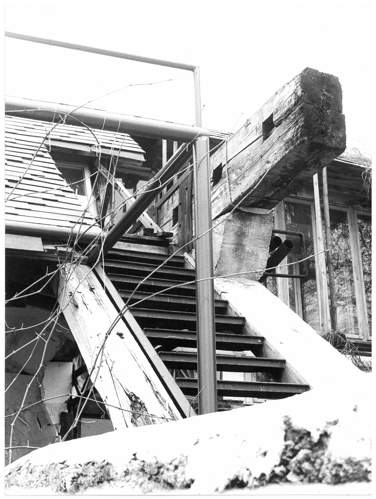

back 
Manchmal schaue ich mir eine Fotografie lange an und versuche in ihr Antworten zu finden. Doch mehr Fragen tun sich auf. Das Bild zeigt soviel und so wenig zugleich. Wie gerne würde ich um die Ecke schauen, näher herangehen oder weit weg laufen. Die starre Abbildung in Bewegung bringen. Aber das Meiste bleibt mir verborgen. Für immer verloren in einem Moment, in dem ich nicht war.
Dann nervt mich das Haus. Denn nichts macht für mich Sinn. Kein Detail ist lesbar als etwas, das ich erkennen und kategorisieren kann. Ich sehe zwar Verbindungsknoten. Diese sehen aber mehr nach zufälligem Zusammentreffen von Materialien, welche nicht zueinander gehören, aus. Hält das? Und für was sind diese Knoten überhaupt gut?
Mein Auge bleibt ständig in Bewegung. Ich werde unruhig. Ich stelle mir vor, wie die Körper der Menschen, die sich in dieser Architektur befinden, in ständiger Bewegung sind. Das Haus lässt die Körper nicht zur Ruhe kommen. Denn das Haus ruht selber nie.
Ein Balken ragt ins Leere. Er wartet darauf, bis ein weiteres Bauteil, das gerade passt, sich zu ihm gesellt. Vielleicht wird es eine Geschossdecke, die sich auf den Balken legt. Vielleicht bekommt er eine Stahlstütze, die ihn von unten entlastet. Ein ins Leere ragender Balken leistet nicht allzu viel. In Sachen Tektonik zumindest nicht.
Der Balken erzählt Geschichten von seinem Leben. Bevor er hier zu liegen – oder zu schweben – gekommen ist, war er noch in einem anderen Gebäude involviert. Nicht sichtbar, als Konstruktionsteil im Steinenschulhaus in Basel. Seiner Dimension zufolge musste der Balken einiges an Kräften aufnehmen. Circa 40 cm hoch und 20 cm tief ist der Querschnitt des Balkens. Auf seiner Längsseite weist er Einkerbungen auf, in denen Querbalken für eine Geschossdecke steckten. So kamen einst Schüler:innen und Lehrer:innen dem Balken zulasten. Unbemerkt gliederte sich der Balken in das Bühnenbild des Alltaglebens ein. Und in Wangelen ist er Teil des Theaters, das die Menschen in ihrem Alltag spielen.
Was Werkstatt Wangelen und zeitgenössische, rezitierte Werke der Architekturgeschichte gemeinsam haben, ist eine Ideologie, die dem Projekt vorausgeht. Das scheint im ersten Moment nicht viel zu sein. Doch schaue ich mir meine gebaute Umwelt genau an, so wirkt viel davon ideenlos. Ideologielos. Geschichten von Werkstatt Wangelen, vor allem die Anfangszeit, erzählen von dem Wunsch nach Veränderung. Die Menschen, die hier ein Projekt starteten, hatten eine Vision. Sie versuchten eine Art des Zusammenlebens zu konstruieren. Die Vorstellung von Utopie testeten sie durch Praxis. Werkstatt Wangelen war somit nicht nur ein Umbau/Anbau/Neubau. Es war ein Testfeld und Spielfeld für das Schaffen von kreativem Freiraum.
Menschen hatten die Möglichkeit, das Haus jederzeit zu besuchen. Der Aufenthalt war günstig. Die Türen offen für alle, die davon wussten. Und zusammen mit ähnlichen Projekten mit den gleichen Ansätzen sollte ein Netzwerk von diesen Häusern entstehen. Ein Netzwerk von Kulturzentren, das sich über ganz Europa und noch weiter hinaus erstreckt.
Kürzlich sendet mir meine Mutter eine Nachricht über die Kurznachrichten-App «Threema»:
«Übrigens war Kurt so alt wie du jetzt bist, als er mit Werkstatt Wangelen anfing hat. Er ist ja 1938 geboren.»
Kurt war also beim Kauf vom Hochstudhaus 1969 31 Jahre alt. Ich bin heute 30 Jahre alt.
Diese Information freut und beängstigt mich zugleich. Im Zuge meiner Recherchearbeit komme ich nicht darum herum, mich mit meinem Grossvater zu vergleichen. Meine Diplomarbeit ist gleichzeitig eine Forschung über meine Identität. Wer bin ich, wer war vor mir, und was hat das mit mir zu tun?
So stelle ich mir Kurt als dreissigjährigen Mann vor. Befremdlich vorerst. In meinen Erinnerungen, die ich seit dreissig Jahren habe, ist er ausschliesslich zwischen 70 und 100 Jahren alt. Doch auch Kurt war einmal dreissig. Das bringt mich näher zu ihm und überhaupt zu meinen Vorfahr:innen. Wie ich waren auch sie zu einem Zeitpunkt ihres Lebens um die 30 und hatten weniger Erfahrung. Wussten nicht, was aus ihnen und der Zukunft wird. Vielleicht wissen sie das heute immer noch nicht. Dennoch leben sie. Haben bis heute überlebt und konnten für Nachwuchs sorgen.
Und da kommt meine Freude ins Kippen. Ich frage mich, was ich alles noch erreicht haben müsste, bis in einem Jahr, bis zu meinem 31. Geburtstag. Beim Schreiben dieser Zeilen fällt mir auf, dass es am 05.09.23 nicht mehr ein Jahr bis zu meinem 31. Geburtstag dauert. Bloss 16 Tage.
Ich müsste also in 16 Tagen ein Haus kaufen im Berner Oberland. Ich müsste bereits einer Künstler:innen-Gruppe beigetreten sein. Ich müsste fünf Kinder am grossziehen sein. Die älteste bereits 10 Jahre alt, der jüngste ein Baby. Ich müsste mich getrauen, Künstler zu sein und dies als Berufstätigkeit betrachten. Doch vor allem müsste ich eine Haltung dem Leben gegenüber entwickelt haben. Eigens dafür publizierte Broschüren müssten diese Haltung übermitteln. Ich müsste eine Vision haben.
Diese Vergleiche machen keinen Sinn. Ich bin ich und nicht mein Grossvater. Doch von Zeit zu Zeit bedauere ich es, Teil meiner Generation zu sein. Während einer Phase an der ETH Zürich Architektur zu studieren, in welcher der immer gleiche Chorgesang angestimmt wird: Architektur steckt in einer Krise.
Wie wir feststellen mussten, steckt die Welt in einer Krise. Und das seit der Erfindung der Agrikultur und wahrscheinlich schon früher. Und niemand kennt einen Ausweg aus der Krise. Erst recht nicht ich.
In Werkstatt Wangelen finde ich nicht die Antwort auf die Frage: Wie sollen wir leben? Dafür erkenne ich aus heutiger Sicht zu viele Probleme, die unlösbar scheinen. Probleme, welche zur Zerstörung des Projekts führten. Wie eine fremde Zelle wuchs das Haus im Organismus Wangelen und wurde sogleich von dessen Abwehrkörperchen attackiert. Nach dem Auflösen kann das Projekt also nicht wieder gleich aufgebaut werden. Der Ort verlangt eine Zelle, welche sich mit den anderen Zellen verträgt und in eine funktionierende Symbiose tritt.
Die Experimente in Werkstatt Wangelen fanden ein ungutes Ende. Was bleibt, ist eine Faszination für die schöpferische Kraft, die dahinter liegt. Menschen im gleichen Alter wie ich es bin, war der Drang nach Praxis gross. Also suchten sie sich ein Spielfeld. Anstatt weiter über Veränderung nachzudenken, musste diese gleich geschehen. Gedanken direkt in Taten umzusetzen.
Das scheint mir und der Architektur zu fehlen. Es war auch nicht Teil meiner Ausbildung, in die Praxis einzusteigen und Realität zu erschaffen.
Zuerst in meinem Studium war die Suche nach den Formen. Architektur sei Ausdruck. Eine Sprache aus Elementen und der Logik der Tektonik. Die Perfektion in Form fand ich nicht. Die Begeisterungsfähigkeit nahm zunehmend ab. Vieles schon gesehen. Wenig vermochte noch zu stimulieren. So wurde die Suche nach der Form abstossend. Form selbst wurde abstossend. Die grossen Architekten als «Formfetischist:innen» beschimpft.
Heute suche ich nach der Sinnhaftigkeit. Wenn nicht Formgebung der Sinn ist, was ist es dann? Die Frage nach dem Sinn verunmöglicht es, je in Form zu treten. Denn ehe ich beginnen würde zu formulieren, hinterfrage ich den Sinn der Form. Die Angst des Scheiterns ist grösser als der Drang nach Praxis.